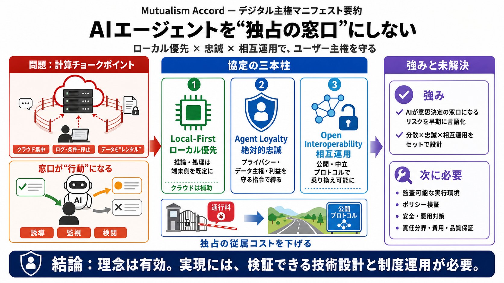

Mutualism Accord Proposes Local-First, User-Loyal AI Agent Protocol
New protocol aims for user-loyal, local-first AI agents. By prioritizing local processing and user fidelity, it aims to …

New protocol aims for user-loyal, local-first AI agents. By prioritizing local processing and user fidelity, it aims to …
In this article, I have explained what AI agent infrastructure actually is, why decentralisation matters, the current li…
## What Is an AI Agent Protocol? An AI agent protocol is a formal set of rules defining how AI agents interact with tool…
## AI Agentic Architecture Deployment with wasmCloud, Tarmac, ZenModel, and IPFS. This project provides a comprehensive …
# TGVP Report - AI Agent Infrastructure in 2026. ## **AI Agent Infrastructure in 2026**. 2026 has been a pivotal year fo…